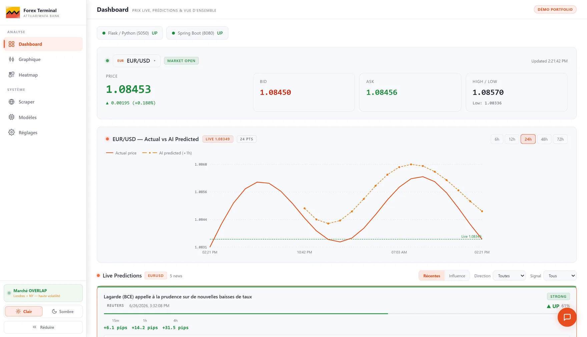

Forex Terminal R60

Forex Terminal est un tableau de bord d’aide à la décision pour le trading de devises. Les news financières (banques centrales, indicateurs économiques, géopolitique) font bouger les marchés en quelques secondes, mais un humain ne peut pas lire et interpréter des dizaines de sources en continu.
L’application scrape en continu plus de 30 flux RSS (Reuters, Bloomberg, BCE, Fed, FXStreet…). FinBERT, un modèle NLP spécialisé en finance, analyse le sentiment de chaque news, puis le texte devient un vecteur de caractéristiques. Pour chaque paire, un modèle LightGBM dédié prédit la direction du prix (UP, DOWN ou FLAT) avec un niveau de confiance et le mouvement attendu en pips à 15 min, 1 h et 4 h.
L’architecture compte trois tiers : React pour l’interface façon Bloomberg, Spring Boot comme passerelle API et Flask pour l’inférence. Chaque signal reste relié à la news qui l’a déclenché, pour que les traders et les analystes puissent le vérifier. L’interface ajoute des graphiques en chandeliers (RSI, MACD, Bollinger), une heatmap 8×8 de la force des devises et un chatbot d’analyse.
- Sources
- 30+ flux RSS
- Paires
- 18 (G10)
- Horizons
- 15 min, 1 h, 4 h
- Entraînement
- 18 ans de données (2002–2020)
- Réentraînement
- toutes les 12 h
- Indicateurs
- 10+, dont Fibonacci, EMA, Bollinger, Ichimoku
- Gain estimé
- environ 70 % de temps en moins sur l’analyse manuelle des news
Stack React · TypeScript · Spring Boot · Flask · LightGBM · FinBERT (Hugging Face Transformers) · pandas · lightweight-charts